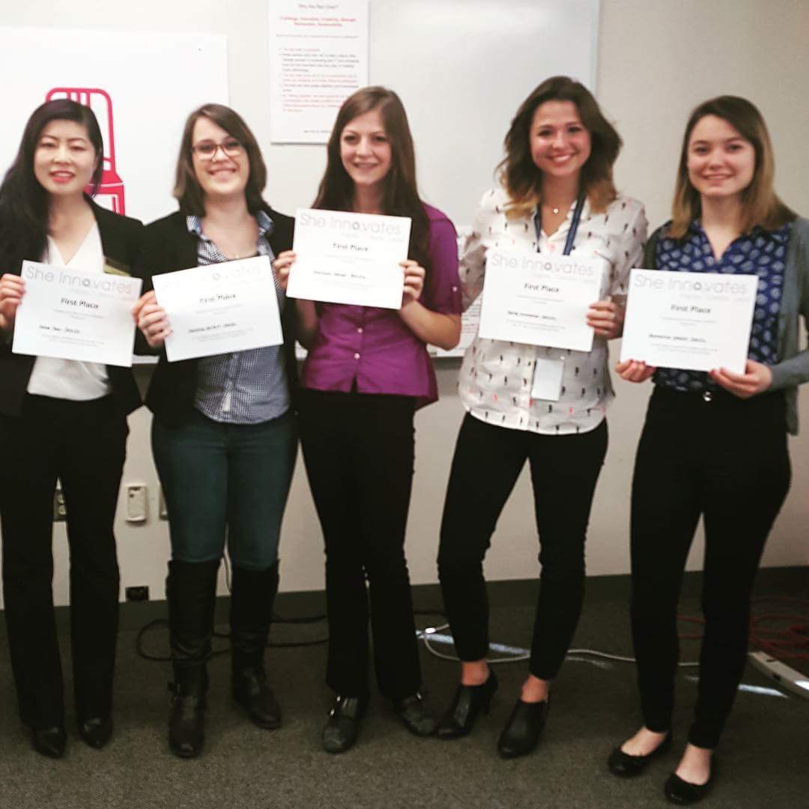

Designed, researched, and implemented a Notifications application that facilitates communication between Amazon corporate and store managers.
Stored the notifications with DynamoDB (AWS) and implemented a service using Java and XML that is able to get, create, retrieve all notifications by store, edit, and delete notifications from the database.
Created a full UI for the application using AngularJS, implementing a dashboard with multiple views, such as a view of all notifications intended for a certain store, a detailed view of a notification, and the abilities to create, delete, and edit notifications.
Implemented two different user roles, a creator and a user.
Utilized AngularJS to create a 'Store Manager Dashboard' - a consolidation of information necessary to the Amazon Go and Books stores.
Integrated information from several other dashboards into one clean, master dashboard that shows a snapshot of several vital store functions including notifications and details relating to in-store operations.
Fully unit tested the dashboard using Jasmine, an AngularJS testing framework
May 2017 - August 2017
Software Engineering Intern
BNY Mellon - Intelligent Business Forms
Worked as member of the Intelligent Business Form development team in an agile application development environment.
Created a real-time XML validator for use in an internal API, using both a custom XML parser and Java’s XML validation library.
Designed a preemptive server monitoring structure and functionality from start to finish using Dynatrace.
Created a type-ahead feature using XML and JavaScript for BNY Mellon's Intelligent Business Form application.
June 2016 - August 2016
Tutor/Advisor - Python Specialist
Codecademy
Tutored nearly 200 online Codecademy Pro learners and debugged code in a variety of programming languages, emphasizing the importance of syntax styling and intelligent structuring of data.
Primarily taught Python, but frequently helped with Java, Ruby, JavaScript, HTML/CSS, Git, and Bash (Linux) command line.
March 2016 - October 2016
Assistant Coodinator
University of Pittsburgh - Information Technology
May 2015 - September 2017
Education
University of Pittsburgh
Bachelors of Science - Computer Science (GPA: 3.41)
Concentrated on coursework in Software Engineering and Machine Learning.
Completed two Software Engineering internships with BNY Mellon and Amazon
August 2013 - December 2017
University of Pittsburgh
Certificate - Russian and Eastern European Studies
Studied the Russian language and courses centering on the USSR and Central/Eastern Europe (Czechoslovakia, Poland, etc.)
Studied abroad with the Pitt in Prague and Krakow program, researching the effects of the USSR on Central Europe.
August 2013 - December 2017
Skills
Programming Languages & Tools
Other skills
Full Stack Developer
HTML/CSS
MATLAB
Unit testing - Jasmine, JUnit
Agile Development & Scrum
Russian Language (Conversational Proficiency)
Awards & Certifications
Susan Hicks Memorial Scholarship Recipient - First ever recipient
Center for Russian and Eastern European Studies Departmental Scholarship
1st
Place - She Innovates Hackathon 2016

Semifinalist - Randall Family Big Idea Competition 2016